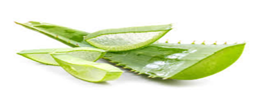

Apa sih isinya?
BAB VI
TERAPI KOMPLEMENTER
A. Yoga pada Ibu Nifas
Laserasi perineum merupakan trauma/robekan persalinan yang mengenai perineum, labia, vagina, dan leher rahim. Meskipun sebagian besar laserasi dapat sembuh tanpa masalah jangka panjang, kasus yang parah dapat menyebabkan rasa sakit yang berkepanjangan, disfungsi seksual, dan rasa malu. Laserasi parah ini memerlukan identifikasi segera dan perbaikan yang tepat selama persalinan. Trauma perineum sering terjadi pada persalinan pervaginam, dengan laserasi yang terjadi secara spontan atau karena intervensi medis seperti episiotomi (Cassandra N. Ramar; Elsa S. Vadakekut; W R. Grimes. 2024). Aloe vera adalah tanaman sukulen abadi seperti kaktus, tahan kekeringan, dan termasuk dalam famili Liliaceae, yang mana terdapat lebih dari 360 spesies yang diketahui. Daun tanaman yang memanjang dan runcing mengandung dua produk berbeda: lateks kuning (eksudat) dan gel lendir bening (gel Aloe vera). Gel Aloe vera terungkap setelah pengangkatan kutikula luar yang tebal. Gel terdiri dari 99,3% air dan sisanya 0,7% mengandung berbagai senyawa aktif termasuk polisakarida, vitamin, asam amino, senyawa fenolik, dan asam organic (Wawan dan Wijaya 2020)
B. Manfaat
- Sebagai anti bakteri, Enzim protease dengan glukomannan dapat menghilangkan bakteri.
- Membantu proses penyembuhan luka perineum, Efek antibakteri dan anti jamur di lidah buaya ini dapat menstimulasi fibroblast untuk penyembuhan luka
- Menghilangkan nyeri, lendir lidah buaya juga terdiri dari beberapa glikoprotein, yang mencegah inflamasi rasa sakit
- Membantu meregenerasi luka perineum, lidah buaya terdiri polisakarida, yang merangsang penyembuhan luka dan regenerasi kulit. Lendirdari tanaman ini dapat digunakan untuk pengobatan internal dan eksternal luka. Lendir lidah buaya mencakup beberapa senyawa seperti vitamin E dan vitamin C dan beberapa asam amino, yang dapat memainkan peran penting dalam percepatan penyembuhan luka (Dwijayanti, Maternity, dan Kurniasari 2024).
C. Kontra Indikasi
- Kontra Indikasi
- Tidak memberikan pada pasien yang alergi dengan aloe vera, karna akan meperberat keadaan luka akbiat timbulnya iritasi.
-
Indikasi
- Ibu nifas dengan luka pada perineum
- Ibu nifas yang berpotensi mengalami infeksi luka perineum
- Ibu nifas yang berpotensi mengalami infeksi luka perineum
D. Evidence Based
Dari penelitian yang di lakukan oleh Mira Mirraturofi'ah, et.al, 2024 didapatkan penyembuhan luka perineum pada ibu nifas kelompok aloe vera sebagian besar cepat (75%) sedangkan ibu nifas dengan perawatan bersih kering memiliki penyembuhan luka cepat (55%). Dari hasil uji mann whitney rata-rata penyembuhan luka pada kelompok aloe vera adalah 4 hari sedangkan pada kelompok bersih kering 6 hari. Secara statistic nilai p-value 0,028 < 0,05 berarti ada pengaruh pemberian gel aloe vera terhadap lama kesembuhan luka perineum pada ibu nifas (Mira Miraturrofi'ah1, Rita Darwati2 2024). Jurnal ini dapat di akses pada link
Klik disini!E. Cara pemanfaatan aloe vera pada luka perineum
-
Cara pertama:
Cuci bersih daun Aloe vera, potong menjadi dua bagian atau iris menyimpang, kerok bagian dalam Aloe vera, ambil gelnya. Gel Aloe vera tersebut dibalurkan di daerah perineum yang mengalami perlukaan. -
Cara kedua:
Cuci bersih daun Aloe vera, potong menjadi dua bagian. Masukan Aloe vera yang sudah dipotong tadi ke dalam baskom berisi air bersih, rendam sekitar 30 menit. Air rendaman tersebut dapat digunakan saat cebok sekaligus membersihkan bagian perineum yang mengalami perlukaan (Hidayat 2024).Gambar 4: Aloe Vera/Lidah Buaya Sumber: Otis, 2019
F. Standar Operasional Prosedur
| STANDAR OPERASIONAL PROSEDUR (SOP) | |
|---|---|
| TERAPI HERBAL ALOEVERA | |
| PENGERTIAN | Aloe vera adalah tanaman sukulen abadi seperti kaktus, tahan kekeringan, dan termasuk dalam famili Liliaceae, yang mana terdapat lebih dari 360 spesies yang diketahui. Gel Aloe vera terungkap setelah pengangkatan kutikula luar yang tebal. Gel terdiri dari 99,3% air dan sisanya 0,7% mengandung berbagai senyawa aktif termasuk polisakarida, vitamin, asam amino, senyawa fenolik, dan asam organic |
| TUJUAN |
|
| INDIKASI |
|
| PROSEDUR |
|
| PROSEDUR |
|
| PROSEDUR |
|
| EVALUASI |
|
G. Evaluasi
Click untuk melihat jawaban anda benar atau salah
Dibawah ini senyawa kimia yang terdapat pada lidah buaya berfungsi sebagai menyembuhkan luka perineum dan membentu regenerasi kulit adalah?
-
Polisakarida
-
Vitamin A
-
Enzim protease
-
Vitamin D
Di bawah ini manakah yang tidak termasuk manfaat lidah buaya bagi penyembuh luka perineum pada ibu nifas?
-
Memberikan rileksasi
-
Meregenerasi kulit
-
Menghilangkan nyeri
-
Sebagai anti bakteri
Di bawah ini indikasi pemberian aloe vera pada luka perineum ibu nifas, kecuali?
-
Ibu nifas dengan luka pada perineum
-
Ibu nifas yang alergi terhadap lidah buaya
-
Ibu nifas yang berpotensi mengalami infeksi luka perineum
-
Ibu nifas yang mengalami nyeri pada daerah luka perineum

0:00